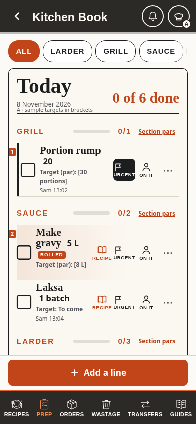
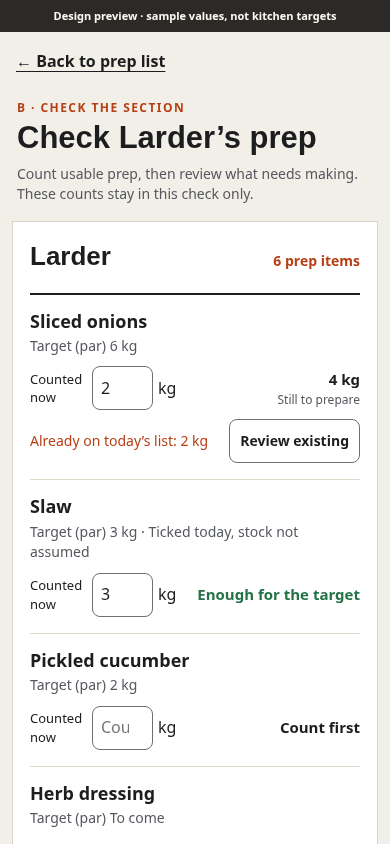
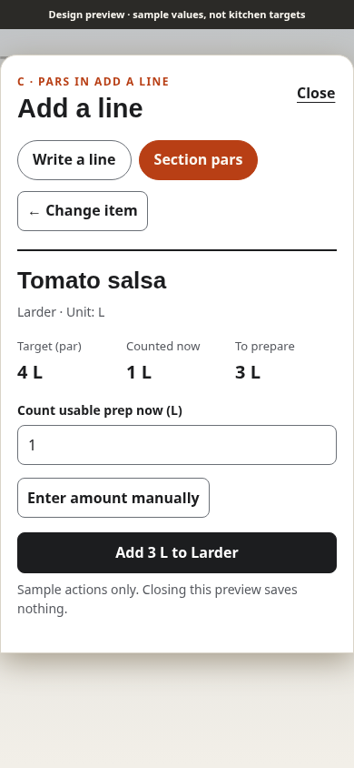

A · Change the least
Targets on the list
Read each target next to the work. Open Section pars for every configured item, including those absent from today's tasks.
Explore A
Open the current clarified design
Three ways to show section pars without confusing the target, stock counted now and work already on the list.
Read each target next to the work. Open Section pars for every configured item, including those absent from today's tasks.
Explore A
Count the whole section before service, review existing jobs and add only the confirmed work still needed.
Explore B
Choose from the complete section catalogue, see the target, then count or enter the amount to make for that item.
Explore C
Keep the lasting standards under Kitchen in the existing panel. The proposed head-chef/owner editor sets item, section, target and confirmed unit. Staff read targets through Prep. Sous-chef editing needs an explicit decision.
Explore the target editorLaptop previewPhone previewCurrent prep quantities are requested work, not stock. With a confirmed target and a fresh physical count in the same unit: to prepare = max(target − counted amount, 0). An existing open job must be reviewed before adding more. Blank is not zero. Ticked does not mean stocked.
Full design brief, trade-offs and source referencesCouncil proposalCurrent staff screen
All data is synthetic. No Firebase calls or saves. Screenshots use the repository test environment's fallback fonts. Geometry and interaction checks are documented in the brief; these are not production or staff-research results.